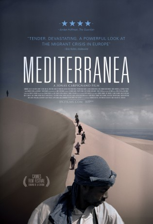

IMDB-Wertung: 6.5 / 10
IMDB-Wertung: 6.5 / 10  Metascore:
Metascore: 
Two men make the dangerous journey from Africa to Italy for a better life, but then face hostility and violence in this shocking look at the life-and-death struggle of refugees.
 IMDB-Wertung: 6.5 / 10 Metascore:
Two men make the dangerous journey from Africa to Italy for a better life, but then face hostility and violence in this shocking look at the life-and-death struggle of refugees.
Jahr: 2015
Dauer: 111 Minuten
FSK: 12
Land: Italien Studio: DCM Film DistributionTonspuren:
Untertitel: Deutsch,
Auflösung: 1080p (1920x1040) Größe: 9369 MB
Genre: Drama
Regisseur: Jonas Carpignano
Drehbuch: Jonas Carpignano
Soundtrack: Dan Romer, Benh Zeitlin
Darsteller:
Datei: X:\2015(G-M)\Mediterranea - Refugees welcome (2015, FSK12, 1920x1040).mkv seit 28.02.2018
Festplatte: HD 2015(A-Z)
 Es gibt insgesamt 129 Filme in der Gruppe '2015(G-M)'
Es gibt insgesamt 129 Filme in der Gruppe '2015(G-M)'